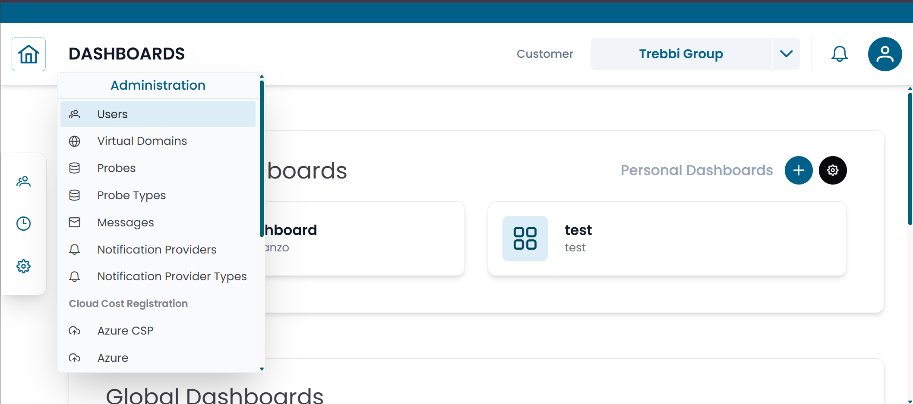
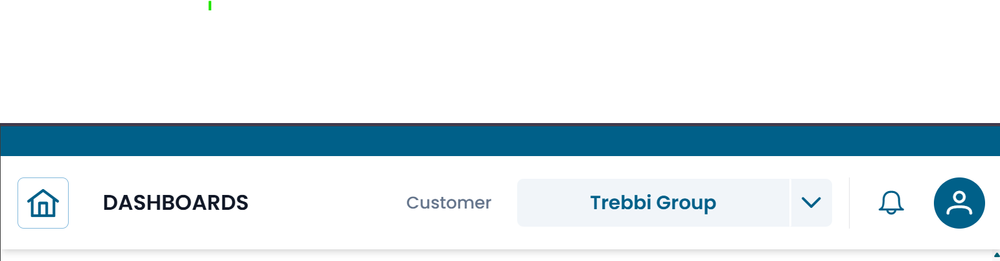
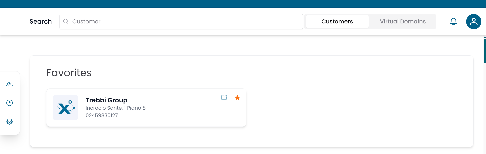

Navigazione
Questa pagina descrive come è organizzata l'interfaccia di XAUTOMATA e come spostarsi tra le sue sezioni principali.
Layout dell'Interfaccia
L'interfaccia è composta da tre elementi:
- una top bar — sempre visibile, con i controlli di navigazione e le impostazioni utente
- una left sidebar — con il menu delle sezioni principali
- un'area di contenuto — dove vengono visualizzate le pagine e le dashboard

Fig.1 - Layout principale dell'interfaccia
Top Bar
La top bar è sempre visibile nella parte superiore dello schermo.

Fig.2 - Top bar
| Elemento | Posizione | Descrizione |
|---|---|---|
| Home (⌂) | Sinistra | Torna alla schermata iniziale da qualsiasi punto della piattaforma |
| Back (←) | Sinistra | Torna alla pagina precedente |
| Notifications (🔔) | Destra | Mostra le notifiche di sistema |
| User (👤) | Destra | Accedi al tuo profilo ed esegui il logout |
Schermata Home
Cliccando su Home accedi alla schermata iniziale, che funge da punto di partenza per la navigazione dei clienti.

Fig.3 - Schermata Home con ricerca clienti
La schermata Home mostra:
- una barra Search — digita il nome di un cliente per filtrare la lista
- un selettore Customers / Virtual Domains — passa dalla navigazione per cliente a quella per virtual domain
- una lista Favorites — i clienti che hai contrassegnato con la stella per un accesso rapido
Clicca su un cliente nella lista per aprire la sua struttura e navigare la sua infrastruttura.
Left Sidebar
La left sidebar è il menu di navigazione principale. Clicca su una sezione per espanderla.
Customers
La sezione Customers contiene i repository utilizzati per modellare le organizzazioni e la loro infrastruttura monitorata.
| Sottosezione | Contenuto |
|---|---|
| Client Repository | Customers, Sites, Contacts |
| Objects Repository | Groups, Objects, Metric Types, Metrics, Services |
Usa questa sezione per navigare l'infrastruttura monitorata, consultare i dati delle metriche e gestire le entità organizzative.
Tracking
La sezione Tracking fornisce gli strumenti per gestire eventi operativi e attività pianificate.
| Pagina | Scopo |
|---|---|
| Calendars | Definisce i programmi temporali per le operazioni di monitoraggio |
| Downtimes | Pianifica finestre di manutenzione per sospendere gli alert |
| Dispatchers | Configura azioni automatiche attivate dagli eventi di monitoraggio |
Administration
La sezione Administration contiene gli strumenti di configurazione a livello di piattaforma.
| Pagina | Scopo |
|---|---|
| Users | Gestisce gli account utente e i permessi |
| Virtual Domains | Organizza utenti, gruppi e probe in scope separati |
| Probes | Gestisce gli agenti di monitoraggio |
| Probe Types | Visualizza i tipi di integrazione di monitoraggio disponibili |
| Messages | Configura i template per il contenuto delle notifiche |
| Notification Providers | Configura i canali di consegna esterni |
| Notification Provider Types | Visualizza i tipi di integrazione di notifica disponibili |
Note
Le pagine di Administration sono visibili solo agli utenti con i permessi appropriati. Gli strumenti Super Admin sono visibili solo agli utenti Super Admin.
Pie di Sidebar
In fondo alla sidebar trovi i link a Terms and Conditions, Contacts e Support.
Come Navigare
Il flusso di lavoro tipico nella piattaforma segue questo schema:
- Apri la schermata Home per selezionare un cliente, oppure usa la left sidebar per andare direttamente a una sezione.
- All'interno di ogni sezione, usa il pre-filter per cercare i record, poi aprili dalla tabella dei risultati.
- Accedi ai dashboard dalla left sidebar nel contesto del cliente pertinente.
Per una spiegazione dettagliata del funzionamento delle sezioni entità (pre-filter, tabella, dialog CRUD, connessioni), consulta Working with Entities.
Visibilità e Permessi
Ciò che vedi nell'interfaccia dipende dalla configurazione del tuo account:
- le sezioni e le voci di menu a cui non hai accesso sono nascoste o disabilitate
- le dashboard vengono mostrate solo se il tuo account ha visibilità su almeno uno dei widget che contengono
- i record nelle sezioni sono limitati ai clienti e ai gruppi associati al tuo account
Se non riesci a trovare una sezione o una dashboard che ti aspetti di vedere, contatta il tuo amministratore per verificare i permessi del tuo account.